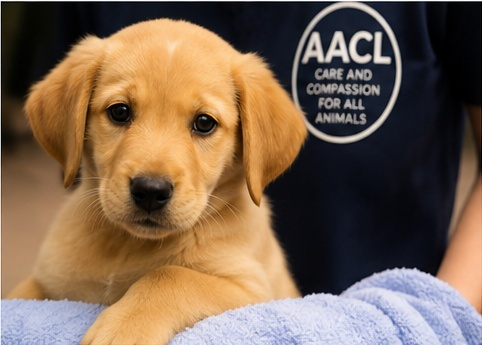

Contact Us
Get in touch with the Animal Anti-Cruelty League.

Johannesburg Head Office
Address: 59 Alice Street, Regents Park, Johannesburg, 2197
Telephone: (011) 435 0672
Email: jhb@aacl-jhbnb.co.za
Cape Town Branch
Branch: Animal Anti-Cruelty League Cape Town
Telephone: (021) 534 6426/7
Email: manager@aacl-ct.co.za
Durban Branch
Telephone: (031) 736 9093
Email: inspectorate@aacldurban.co.za
Port Elizabeth / Gqeberha
Telephone: (041) 456 1776
Email: vismat@intekom.co.za
Our Locations
The map below represents where an interactive map would be placed on the final website.
📍 Interactive Map Placeholder
Have a Question?
If you need more information, please complete our enquiry form.
Contact Us